Phone Check
Main at bf08cc4 (M129 schools and offers, the baked Blender art, M130 rooms), built as a development APK
and played on a real Galaxy A15 (SM-S156V, Android 16, 1080 × 2340, 450 dpi, 90 Hz). The game classified the screen as a phone, and every
school's room had the right number of desks, with at least one left free. Most of it works. One bug blocks play:
at the National Examination Centre, leaning in on a front-row student leaves the screen blank.
Blocking: the camera goes blank on a front-row student at the National Examination Centre
Tap a front-row student in the National hall. The supervisor walks over and the camera leans in. It ends up outside the room, looking at the back of the front wall. Only the HUD and the action panel are left on a flat grey screen. It stays like that: Back does nothing, and with no room on screen the player cannot tap anyone else.
Likely cause: the focus pose in FixedCameraRig.FocusPosition() puts the camera about 5.4 m in front of the
student (7 m at 46°, plus the screen-height bias). Front-row seats are 4 m from the front wall (RoomLayout.FrontClearance),
so the camera lands about 1.4 m outside the room. The exam hall's front wall is 5.0 m tall (RoomDresser, ExamHall
WallHeight = 5.0f), which is higher than the line from the camera to the student. The 3.0 m and 3.6 m walls in the other rooms are
low enough. On the State University front row (3.6 m wall) the wall only covers the bottom of the frame, behind the action panel.
The code has not been changed; the fix needs approval.

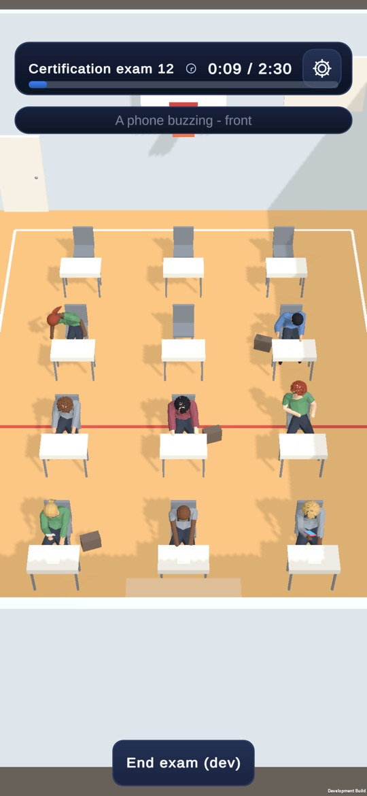

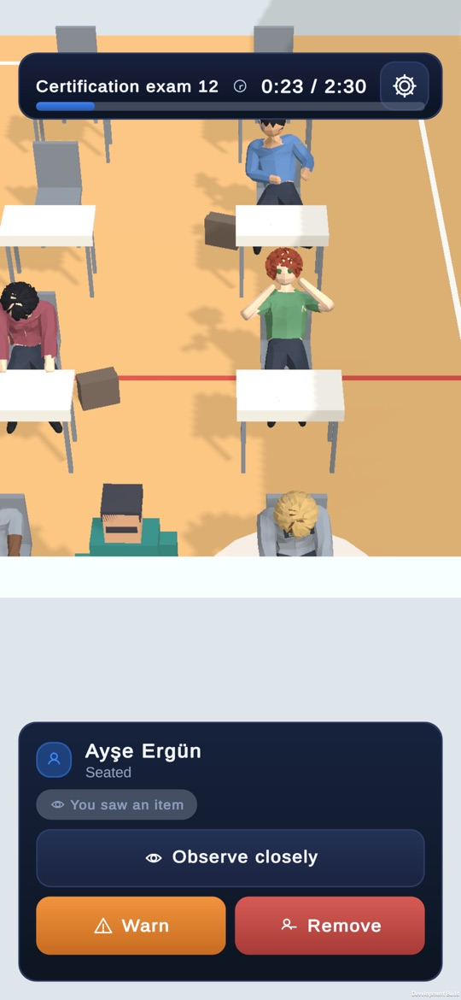


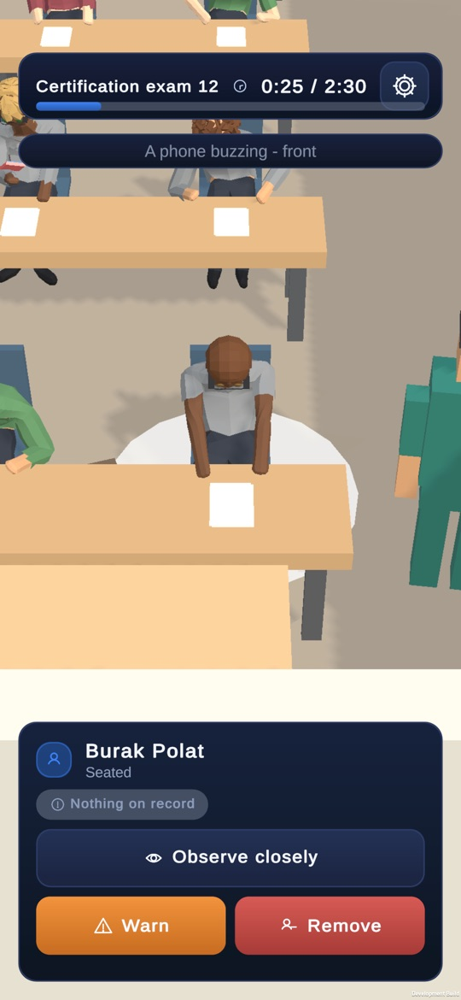
The device and the build
Galaxy A15 5G, Android 16, 1080 × 2340 at 450 dpi, Mali-G57 MC2 on Vulkan, 90 Hz panel.
The game logged Screen 1080x2340 @450 dpi: rooms sized for a Phone. The 2.17 aspect ratio makes it a phone whatever the dpi.
Development APK, 111,059,665 bytes (106 MB). Batchmode IL2CPP, 0 compile errors, built in 6 min 38 s.
Median per room while the exam runs, from the in-app frame probe (target 90). The National hall is no slower than Maple. Details below.
What was checked
| Item | Result | What the phone showed |
|---|---|---|
| Title screen art | pass | Sharp, correctly cropped. The title over the image is readable and the buttons fit. |
| Hub hero per school (dusk) | pass | All 8 checked. Each shows its own building, sharp and not stretched, and the name and stars match the school. Long names (National Examination Centre, Eastgate Evening College) fit on one line. |
| Hub hero, day variant | not reachable | Day renders appear only with a light theme. A player build has no way to switch theme (Settings has none, and GameTheme.Use has no in-game caller), so they cannot be seen on a device. |
| Exam hall banner (results) | pass | Sharp. It is the same generic exam-room render at every school. |
| Event-card objects | minor | All sharp. Some pictures do not fit their card: a gold medal on an audit penalty, a sealed document on "You are not well", coins on "Car trouble". |
| 8 schools, ratings | pass | Stars, kinds and names are right in the hub and on the offer cards. |
| Single offer | pass | "More money elsewhere" compares the rating and salary now against the school offered. Nothing is cut. |
| Two offers | pass | "Two schools want you": both schools are compared, with the Brightpath note. Join X / Join Y / Decline both all fit. Joining Brightpath moved the career and changed the hub. |
| Desks per school (phone) | pass | Maple 5, Riverside 7, Eastgate 7, City High 9, Brightpath 7, Kingsley 10, State University 10, National 12. Every room had at least one free desk. |
| Front-first seating | pass | In every room the empty desks were at the back, away from the supervisor's desk. |
| Camera fits the room | pass | The whole class is on screen in every room. The top HUD covers only the back wall, never a desk. |
| Interaction focus | blocking at National | Kingsley (middle row), City High (back row) and State University (front row) lean in well. National front row goes blank (above). |
| Walk to a student | pass | "Walking over to …" appears and the supervisor arrives every time. |
| Students readable | pass | Raised hands, a phone in hand and bags are readable even in the 12-desk hall. On white desks (Brightpath, National) the exam papers barely show. |
| Text truncation | pass | No text was cut on any screen captured. Long lines wrap. |
| Crashes / exceptions | pass | 10 launches, no crash and no managed exception. Notes in the logcat section. |
Other issues
- Medium: the supervisor is often off screen when the exam starts. At Kingsley, City High and National the supervisor stands at the front wall and is hidden by it. Only the top of the head shows at City High (room-cityhigh, bottom centre), and at Maple the figure is cut by the screen edge. At Eastgate the supervisor is visible but stands inside the supervisor's desk. This is probably the same cause as the blocking bug: the room's front edge is very close to the camera's frame.
- Minor: event pictures do not always fit the event. A medal for an admissions-audit penalty (event-audit), a sealed document for a headache (event-unwell).
- Minor: exam papers on white desks. At Brightpath and National the papers are white on white and almost disappear.
- Minor: the results card mixes currency formats. "Monthly expenses −280" has no ¢, while the lines above it do (results).
- Minor: a NavMesh warning at boot. Every launch logs
Failed to create agent because there is no valid NavMeshabout 0.7 s beforeNavigation ready. Walking works, so this is a start-up ordering warning. - Note: admission taps are sometimes dropped. Taps on Admit sent 2.5–5 s apart were often ignored (8 taps admitted 4 at National). With one tap every 7 s, each tap worked. This may be a deliberate input lock while the student walks in, but a player tapping quickly will notice it.


Hubs
Each school's dusk render. The title screen is first.


Rooms on the phone
Each room just after admission ended, with all students seated.

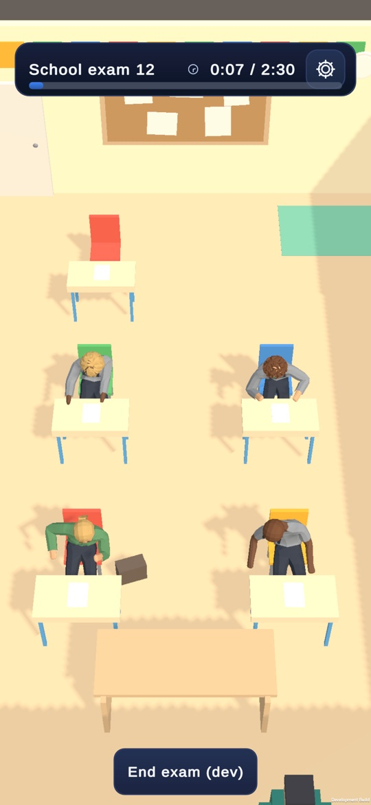

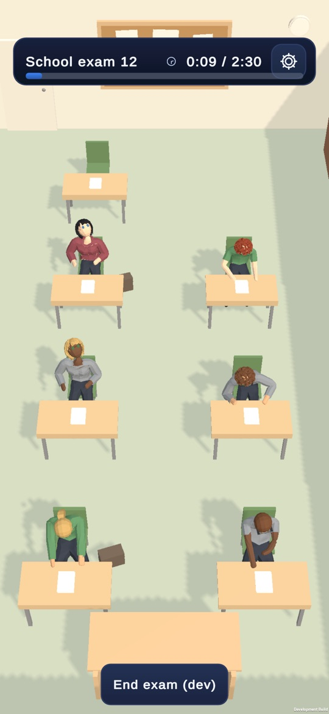

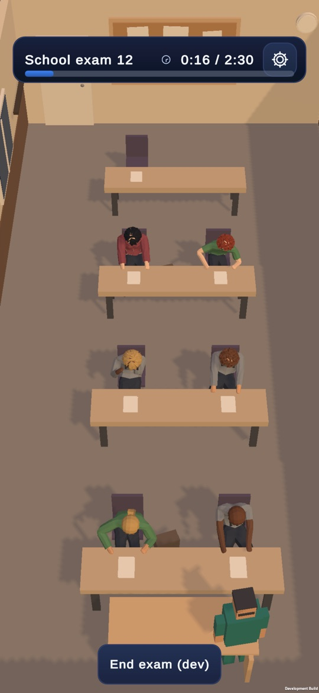
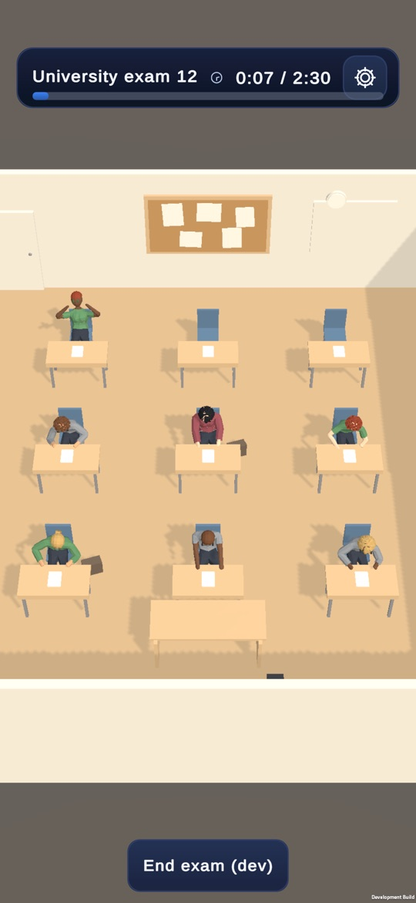

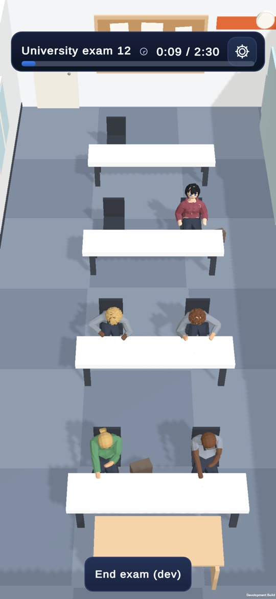

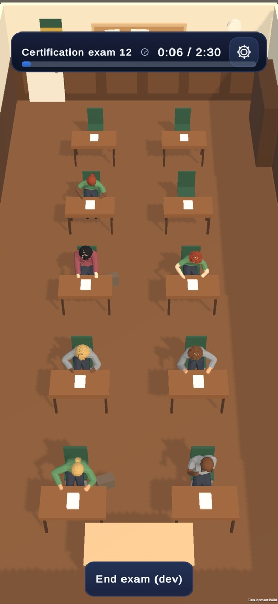

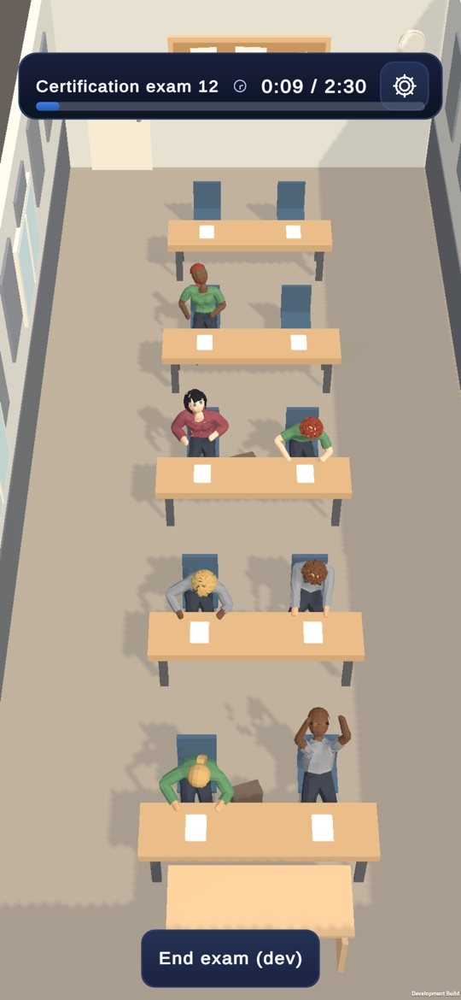
Walking over and leaning in

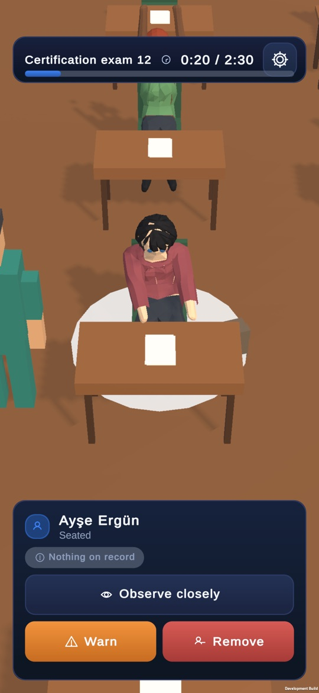

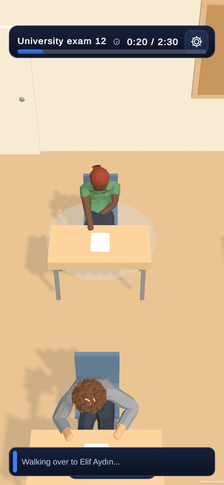

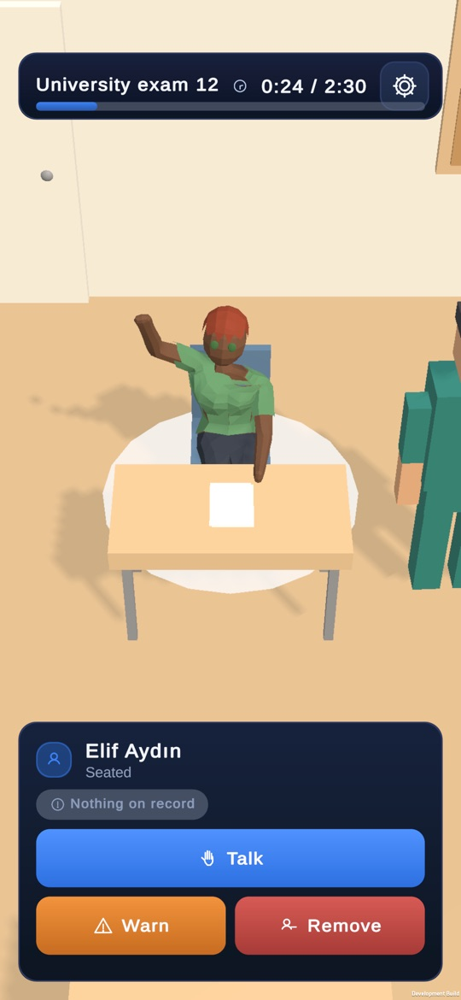
Offers, events and results


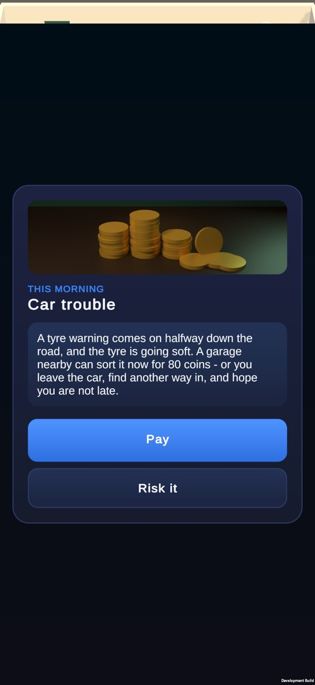
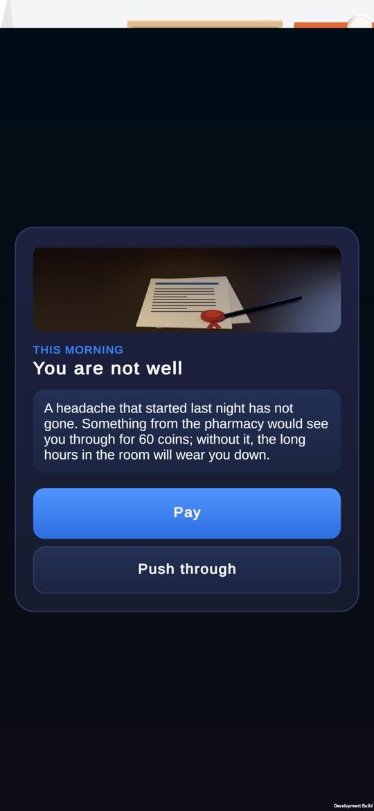
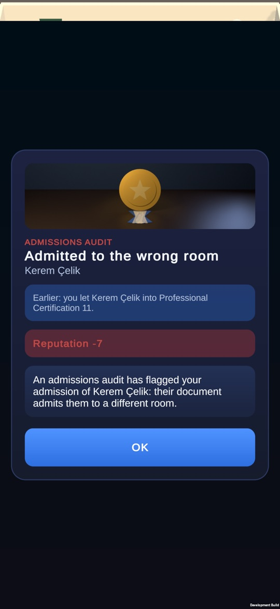
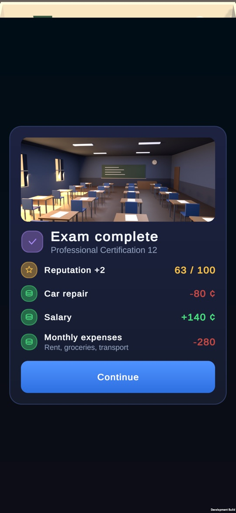
Frame rate
This phone gives no frame data to dumpsys, because Unity draws into its own SurfaceView. The numbers are from the game's own
FrameTimeProbe, switched on with perf_probe.flag and logged to logcat (tag ProctorPerf) every 5 s. Target 90 fps, vSync off.
The table shows the median of the 5-second windows in each room and phase.
| Room | Admission | Exam running | Windows (running) |
|---|---|---|---|
| Maple (5) | 52.2 | 69.0 | 4 |
| Riverside (7) | 51.3 | 66.1 | 4 |
| Eastgate (7) | 50.9 | 65.7 | 5 |
| City High (9) | 56.7 | 70.2 | 7 |
| Brightpath (7) | 50.7 | 67.0 | 4 |
| Kingsley (10) | 54.3 | 65.5 | 11 |
| State University (10) | 50.0 | 63.3 | 7 |
| National (12) | 55.3 | 69.2 | 24 |
Frame times alternate between 11.1 ms and 22.2 ms (p50 11.1, p95 22.3). This is a 90 Hz display missing every other vsync, not slowdown caused by room size. Each room start and each results screen has one hitch, which lasted 430–760 ms in this run.
Logcat
- No crash, no ANR, no managed exception from the game in 10 launches.
- Each launch:
Unable to setup multicast socket for player connection/Socket: Failed to set blocking mode. These are the development build's profiler socket and are harmless. - Each launch:
Failed to create agent because there is no valid NavMesh, thenNavigation ready. Listed as a minor issue above. - Everything else in the log came from other apps (Google auth, Nearby, a React Native app).
How the schools were reached
- There is no developer setting for the school (GameBootstrap only has a device-class override). Copies of the save were edited on the computer, setting
State.Career.InstitutionIdto each school, and pushed as the save. The offer cards came from copies with a scheduledPromotionOfferevent added, so they show the real card for a made-up offer. - The user's own save (at Kingsley Academy) was copied off the phone and checksummed before installing. At the end, the same files were pushed back and the checksums matched. No save file is published here.
- Not checked: the day hero renders (no light theme in game), a tablet (no tablet attached), the 5 redrawn icons one by one (they appear in the Career/Store/Manual tab bar but were not opened), and offers produced by real play.